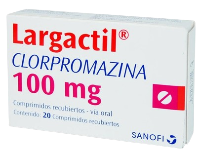
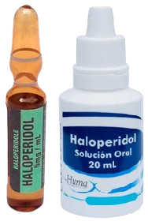

Clorpromazina
Antipsicótico de fenotiazina que se usa para tratar náuseas, vómitos, ansiedad, esquizofrenia, trastorno bipolar y problemas graves de conducta en niños.
Mecanismo de Acción
Bloquea diferentes receptores postsinápticos: en los receptores dopaminérgicos (subtipos D1, D2, D3 y D4) y en los receptores serotoninérgicos (5-HT1 y 5-HT2).
Indicaciones
Agitación psicomotriz: psicosis aguda, crisis maniaca, acceso delirante, síndrome confusional; proceso psicogeriátrico. Proceso psicótico: esquizofrenia, síndrome delirante crónico.
Contraindicaciones
Hipersensibilidad a fenotiazinas, niños < 1 año, coma barbitúrico y etílico, riesgo de glaucoma de ángulo agudo.
Presentaciones
-
Comprimidos de 25 y 100mg
-
Solución oral 40 mg/ml
-
Solución inyectables 25 mg
Cuidados de enfermería
Control de los signos y síntomas extrapiramidales.
Evaluación del nivel de conciencia del paciente, especialmente si es un anciano; la sedación excesiva puede dar lugar a ataxia y a caídas.
Valoración de los signos vitales del paciente, incluida la presión arterial, para detectar hipotensión.
Efectos adversos
Somnolencia, agitación, insomnio, discinesias, acatisia, fotosensibilidad, hiperprolactinemia, amenorrea, manifestaciones extrapiramidales, hipotensión arterial, ictericia obstructiva, estreñimiento, disuria, galactorrea, hipotensión, convulsiones.
Haloperidol
Es un agente antipsicótico que se usa para tratar la esquizofrenia y otras psicosis, así como los síntomas de agitación, irritabilidad y delirio.
Mecanismo de Acción
Ejerce su efecto antipsicótico a través de su fuerte antagonismo del receptor de dopamina (principalmente D2), particularmente dentro de los sistemas mesolímbico y mesocortical del cerebro.
Indicaciones
Tratamiento de la esquizofrenia, las manifestaciones de trastornos psicóticos, el control de los tics y las expresiones vocales del trastorno de Tourette en niños y adultos.
Contraindicaciones
Hipersensibilidad a butirofenonas, epilepsia, enfermedad de Parkinson, depresión del sistema nervioso central, alcoholismo.
Presentaciones
-
Comprimidos de 5 y 10 mg
-
Solución oral al 2%
-
Solución inyectables 5 mg/ml
Cuidados de enfermería
Vigilar efectos extrapiramidales y signos neurolépticos.
Vigilar los signos de reacciones de hipersensibilidad, incluidos los síntomas pulmonares (edema laríngeo, sibilancia, disnea) o reacciones cutáneas (sarpullido, prurito, urticaria). Notificar al médico de inmediato si ocurren estas reacciones.
Control de signos vitales, especialmente evaluar la presión arterial periódicamente.
Efectos adversos
Somnolencia, mareos e hipotensión. Visión borrosa, resequedad de boca, estreñimiento, pesadez de brazos y piernas, dificultad para caminar, sacudidas de músculos de la cabeza, la cara y el cuello, temblor fino de manos y dedos (síntomas extrapiramidales) y acatisia.
Levomepromazina
Es una fenotiazina utilizada en el tratamiento de la psicosis, en particular las de la esquizofrenia, y las fases maníacas del trastorno bipolar.

Mecanismo de Acción
El efecto antipsicótico se debe en gran medida a su antagonismo de los receptores de dopamina en el cerebro. Además, su unión a los receptores 5HT2 también puede influir.
Indicaciones
Tratamiento de las psicosis, en particular las de la esquizofrenia, y las fases maníacas del trastorno bipolar; insonmnio.
Contraindicaciones
Hipersensibilidad al fármaco, pacientes debilitados, caquécticos, añosos, comatosos, antecedentes de discrasias sanguíneas, parkinsonismo, durante el embarazo y la lactancia.
Presentaciones
-
Comprimidos de 25 y 100 mg
-
Solución oral al 4%
Cuidados de enfermería
Control de los signos y síntomas extrapiramidales.
Evaluación del nivel de conciencia del paciente, especialmente si es un anciano; la sedación excesiva puede dar lugar a ataxia y a caídas.
Valoración de los signos vitales del paciente, especialmente la presión arterial por la hipotensión que produce el medicamento.
Efectos adversos
Somnolencia, agitación, insomnio, discinesias, fotosensibilidad, hiperprolactinemia, manifestaciones extrapiramidales, hipotensión arterial, ictericia obstructiva, estreñimiento, disuria, galactorrea, hipotensión, convulsiones.